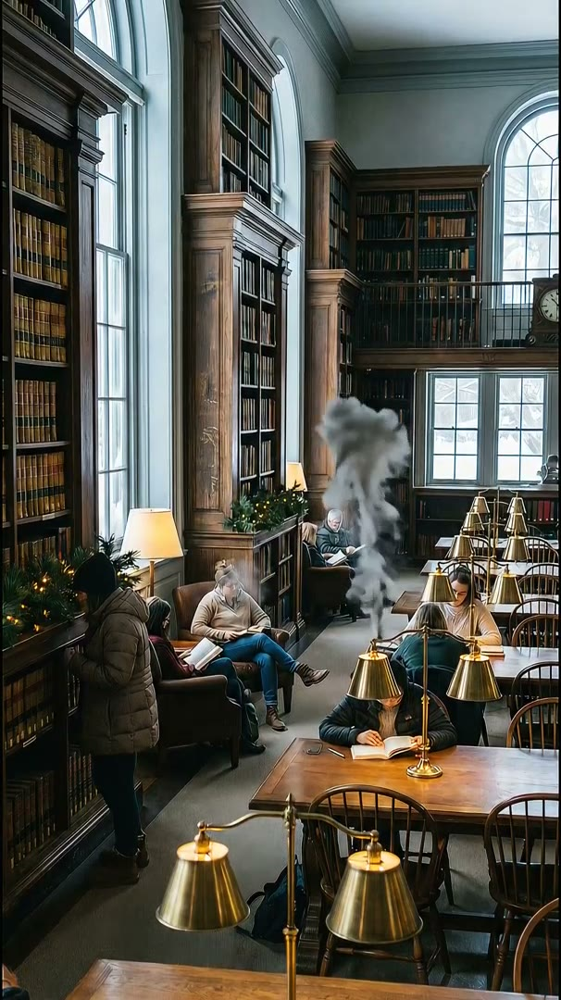

Begin with Midnight Reading
The curated recipe blends pages, low fire and window rain at restrained levels.
Reading ambience
Build the small sense of company that helps a reading session settle, without conversation or a changing music queue pulling focus.
No account required · audio-only mode available · mixes stay on your device

The curated recipe blends pages, low fire and window rain at restrained levels.
Lower page turns or room tone independently until the library sits behind the work.
Quiet View leaves the date, weather and a minimal visualizer while controls move out of sight.
Make it yours
Listen to turning pages, distant room tone, soft rain and subtle study sounds with calm library video loops for reading, writing and focus.
Atmosphere lets you combine several sounds, set individual layer volumes, change the matching video loop, save a mix locally and share a playback configuration. Linked playback keeps the main pause button simple; Data Saver and Audio only reduce unnecessary media transfer.
Open Quiet Library Sounds for Reading in the playerQuestions
The main library layers focus on pages and room ambience rather than clear speech.
Yes. Midnight Reading is a ready-made combination, and custom mixes can be saved locally.
Yes. Atmosphere has no account requirement; local settings and mixes stay on the current device.